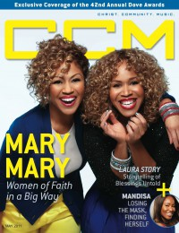

CCM Digital, May 2011
| Cover |
|---|
|  |
 Online Exclusively Online Exclusively |
| Writers in this Issue |
| Argyrakis, Andy Aspinwall, Grace S. Assad, Audrey Conner, Matt Ferguson, Rachel Greer, Andrew Hoernschemeyer, Emily Jackson, Tom Lusk, Caroline Shaver, Rachel Webb, Derek |
Mary Mary
Cover Feature:- "Mary Mary's Big Mission" by Caroline Lusk
- "Mandisa Drops the Mask"
- "42nd Annual Dove Awards"
- "Storytelling" by Caroline Lusk
Worship:
- "When Love Overcomes: Risking It All In Worship" by Emily Hoernschemeyer
- "The Stand"
- "Mommy Magic" by Rachel Ferguson
- Andrew Osenga by Matt Conner
- Stryper by Andy Argyrakis
- The McCrary Sisters by Andrew Greer
- Nicole C. Mullen by Andrew Greer
- Abandon by Andy Argyrakis
- Paul Colman Trio
- "Thoughts on Inspiration - Part Four: Wrestling" by Audrey Assad
- Switchfoot by Andrew Greer
Reviews & New Releases:
- Ryan Stevenson - Yesterday Today Forever by Andy Argyrakis
- Brenton Brown - Our God Is Near by Andy Argyrakis
- Benjamin Dunn - Circus of Love by Matt Conner
- Building 429 - Listen to the Sound by Grace S. Aspinwall
- John Waller - As For Me and My House by Grace S. Aspinwall
- various artists - Jesus Calling: Songs Inspired By by Grace S. Aspinwall
- Laura Story - Blessings by Grace S. Aspinwall
- Petra - Back to the Rock by Andy Argyrakis
- Anthem Lights - Anthem Lights by Andy Argyrakis
- Abandon Kansas - Ad Astra Per Aspera by Andy Argyrakis
- Courrier - A Violent Flame by Matt Conner
- The Gallery - Come Alive by Matt Conner
- Arthur Alligood - I Have Not Seen the Wind by Matt Conner
- Kirk Franklin - Hello Fear by Andrew Greer
- Nicole C. Mullen - Captivated by Andrew Greer
- Jennifer Holliday, Raphael G. Warnock - Goodness & Mercy by Andrew Greer
- Buddy Miller - The Majestic Silver Strings by Matt Conner
- Hyland - Weights & Measures by Matt Conner
- Drew Holcomb - Chasing Someday by Andrew Greer
- "Dolly Parton's "9 to 5" Musical Broadway Tour, Bank of America Theatre, Chicago, IL" by Andy Argyrakis
- "Hallowed Is Your Name" by Derek Webb, Rachel Shaver
- "Stop Thinking!" by Tom Jackson
Relevant Links
For more information about CCM Digital visit .This issue is available exclusively online.
© 2011 CMnexus. Last updated September 2019. Contact: editor -AT- cmnexus -DØT- org About